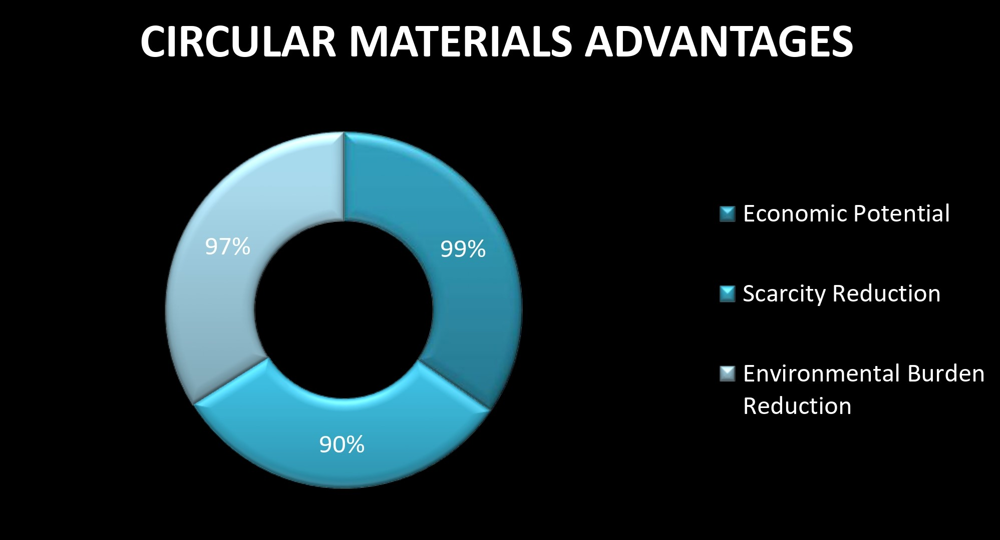

Do you know that the materials used in creating mobile consists of Copper (Cu), Aluminium(Al), Cobalt(Co), Gold (Au), Palladium(Pd) and other rare earth metals?
And that these metals make 73% material mass of the mobile phones?
And recovering these materials could capture:
- 99% of the phones' total economic potential.
- 90% of the calculated Scarcity.
- 97% of the calculated environmental burden.
